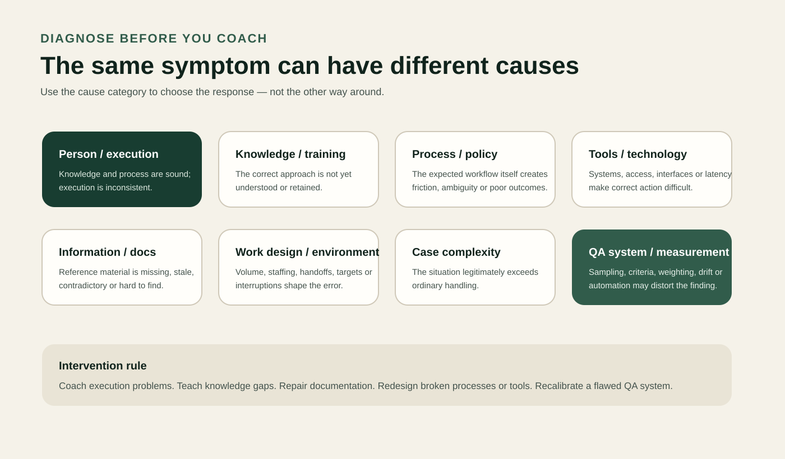

Observe
Collect interactions or service records using a sample appropriate to the question.
Customer Experience & Quality
Turning interaction evidence into patterns, likely causes, matched interventions and system learning.

Core philosophy
I developed this framework by synthesizing recurring lessons from customer-service and quality work across more than one environment. The central idea is simple: quality analysis should help people and systems improve, not merely produce scores or identify someone to blame.
A useful QA system asks what actually happened, whether the issue is isolated or recurring, what is driving it, what is within the frontline worker's control, which intervention best fits the likely cause, and whether that intervention worked.
The aim is learning and improvement with accountability — not punishment through measurement.
The framework
Collect interactions or service records using a sample appropriate to the question.
Use explicit criteria tied to customer outcomes, risk and operational requirements.
Account for policy, tools, information, case complexity and conditions outside the worker's control.
Separate one-off incidents from recurring behavior or wider system conditions.
Identify the likely mechanism instead of assuming every defect is an employee problem.
Consider severity, recurrence, reach, evidence confidence and intervention leverage.
Match the smallest reasonable intervention to the diagnosed cause.
Review later evidence to determine whether the intervention actually helped.
Feed recurring findings back into training, documentation, processes, tools and standards.
Diagnosis
The same visible symptom can come from very different mechanisms. Before prescribing coaching, I test whether the likely cause sits with execution, knowledge, process, tooling, information, work design, case complexity, or the quality-measurement system itself.
This matters because the wrong diagnosis produces the wrong intervention: retraining someone whose tool is broken, coaching a policy problem, or disciplining an employee based on a biased sample does not improve quality.

Reconstructed demonstration
Reconstructed demonstration of my quality-analytics method. No employer or customer data.
A fictional home-services support team sees customers contacting support again after technician appointments are booked. A simple “repeat contact = agent failure” interpretation would be wrong.
Appointments are booked correctly, but some customers are not told the visit window or what happens next.
Several incorrect expectations trace to the same stale reference material.
The support interaction is handled correctly, but downstream service delivery fails.
Analytical rigor
Framework context
This framework is informed by my experience across customer-service and quality environments, including ibex and HGS, and refined through later systems-thinking and operations work.
The framework itself is my current reusable working method rather than an official methodology from either employer.